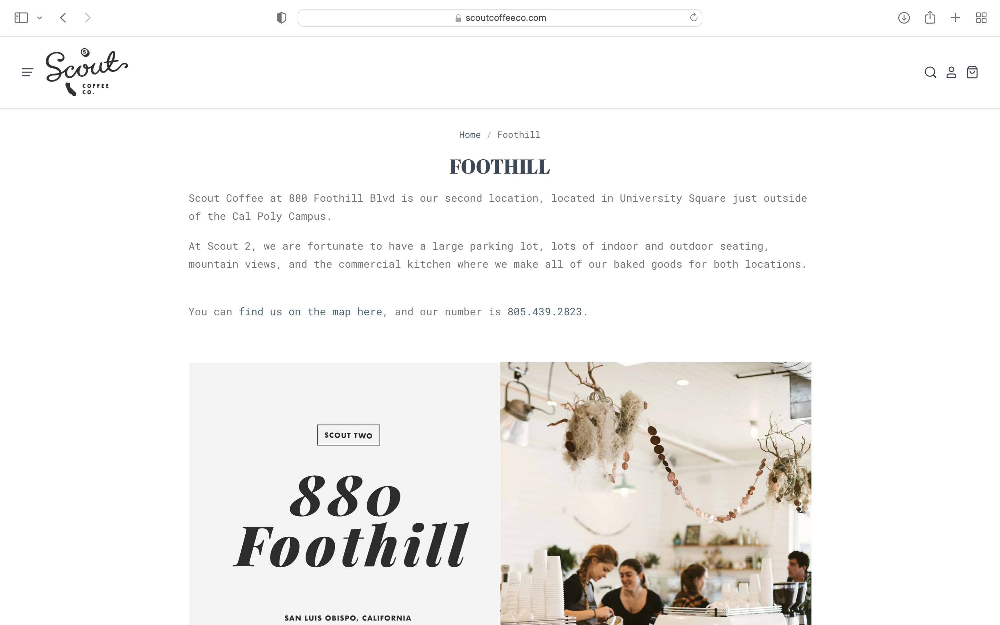
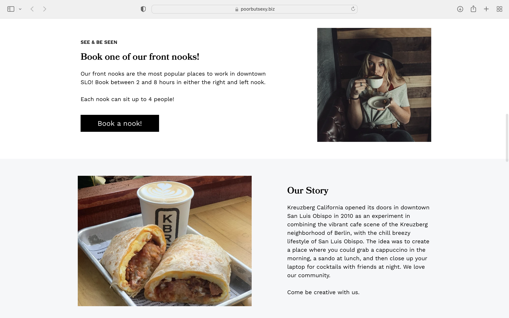
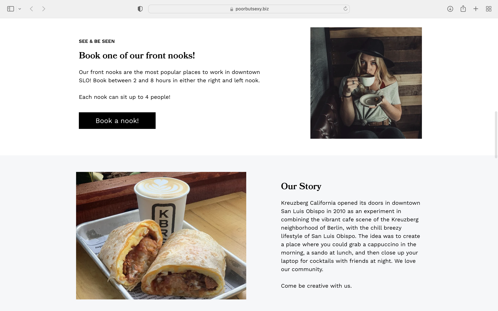
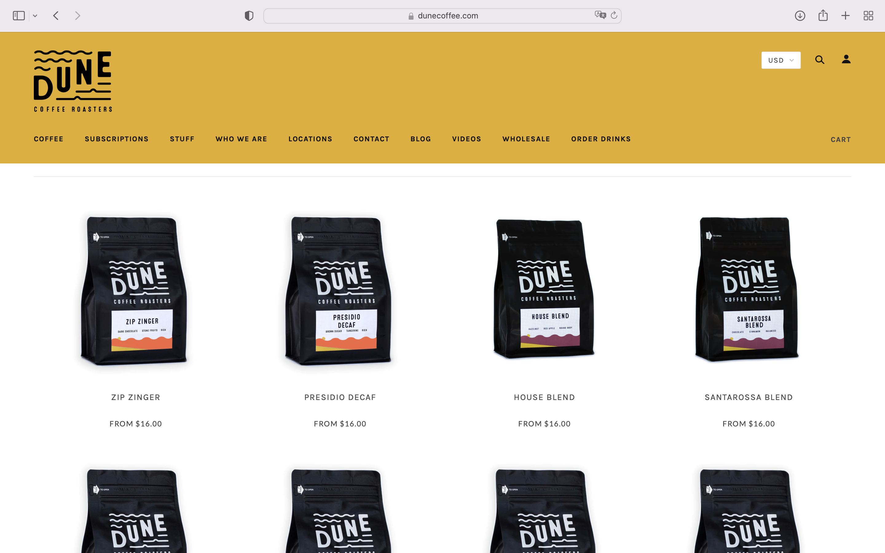
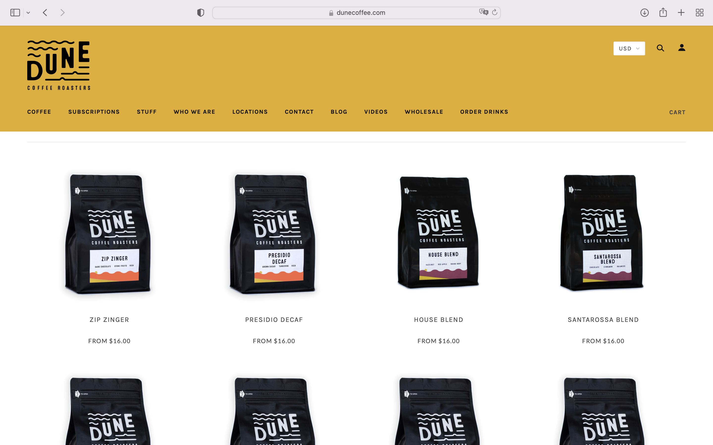

Final project proposal
Introduction
Dahlia Cafe
Dahlia Café is a brick and mortar diet- and allergen-friendly café and bakery located at the intersection of Marsh St. and Garden St. The store is run by founders and siblings Tony and Sierra Emerson, and prides itself in its locally sourced, family-owned operations. Their products include classic coffee selections and a variety of in-house baked goods.
Target audience
Dahlia Café’s landing page targets local community members interested in a wholesome café experience. The café is not limited to those with dietary restrictions, and encourages anyone passionate about wholesome, locally sourced products to enjoy its brews and pastries.
Website visitors would reach this website to learn about the company’s mission, values, and background, menu options and prices, contact information, or café location and hours. The website is not used to place orders.
Comparative analysis
Scout Coffee
Kreuzberg California
poorbutsexy.biz/kreuzbergcalifornia
 

DUNE Coffee Roasters
 

Website content
Home
Open daily: 7:30am-3:30pm
1100 Garden St. San Luis Obispo, CA
(808)-555-2035
[Image of barista counter and pastry display.]
About
Dahlia Café prides itself in its locally sourced, family-owned, diet and allergen-friendly operations, serving members of the Central Coast community for 6 years. Established in 2016 by brother-sister duo Tony and Sierra Emerson, Dahlia Café is inspired by the vibrant, resilient, and perennial Dahlia flowers of Central America.
Dahlia Café seeks to support a wide variety of diets and dietary restrictions without compromising wholesome ingredients or delicious taste: we offer a wide range of sweetener and milk options for our coffee selections, and dairy-free, nut-free, egg-free, gluten-free, and/or soy-free baked good options.
[Image of founders and siblings Tony and Sierra Emerson.]
Menu
Coffee
Black
Latte
Cappuccino
Americano
Espresso
Mocha
Macchiato
Café au Lait
Baked Goods
Gluten Free Zucchini Bread
Banana Bread
Blueberry Muffin
Cinnamon Muffin
Brownie
Blondie
Strawberry Oat Bar
Blueberry Oat Bar
Apple Oat Bar
[Image of a blueberry muffin and coffee on a table.]
Contact
Open daily: 7:30am-3:30pm
1100 Garden St. San Luis Obispo, CA
(808)-555-2035
For suggestions, concerns, or questions, email us at dahliabaker@gmail.com